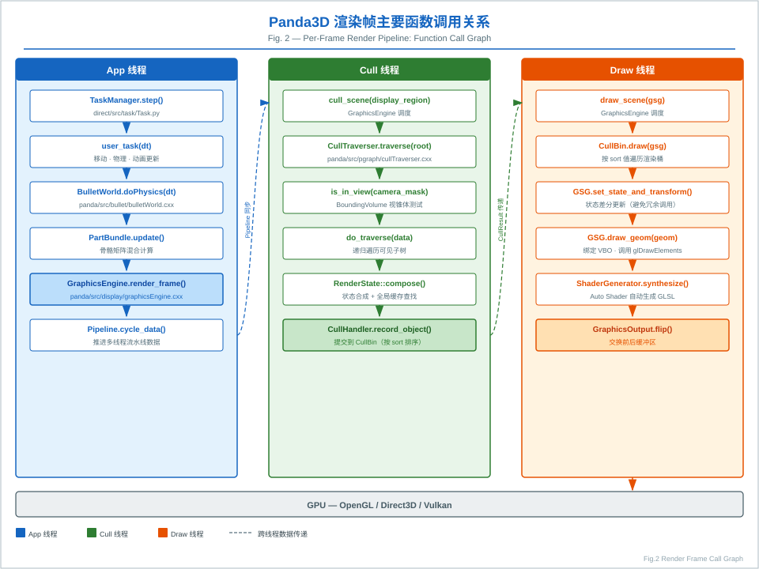
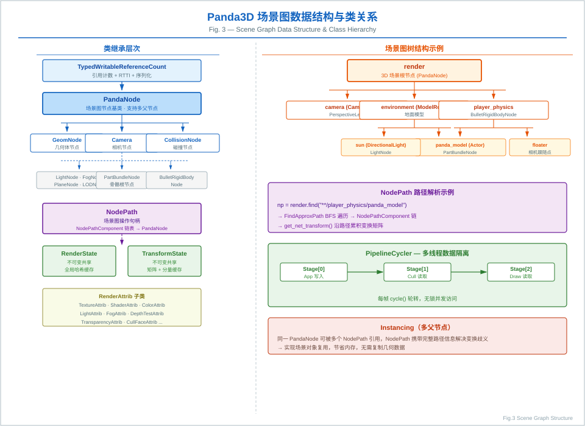
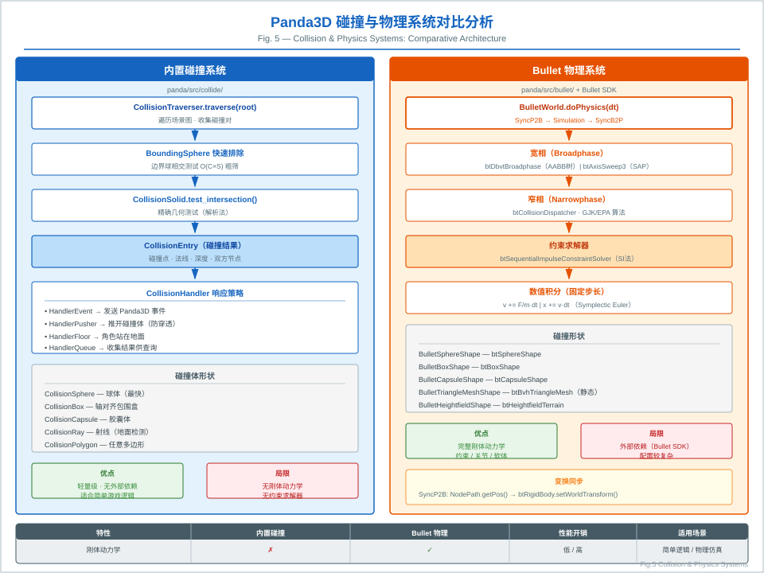
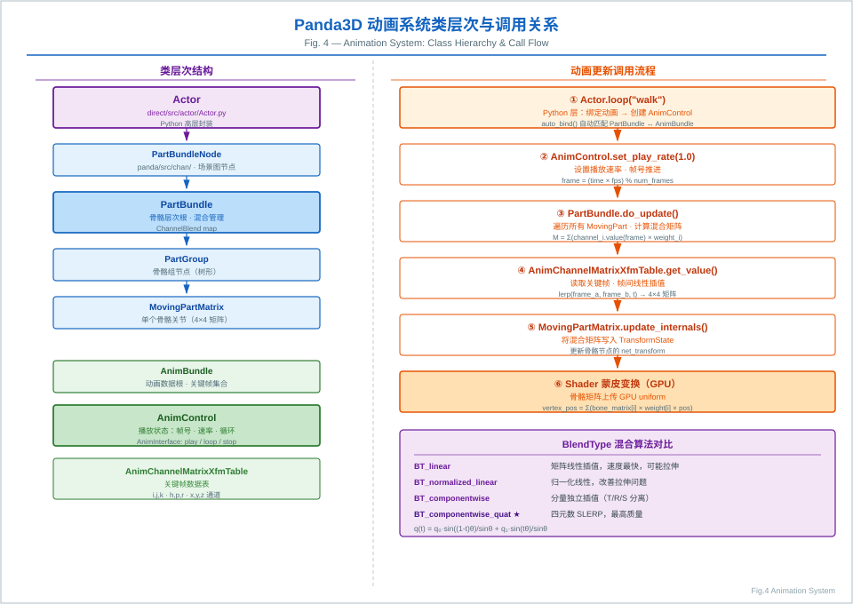
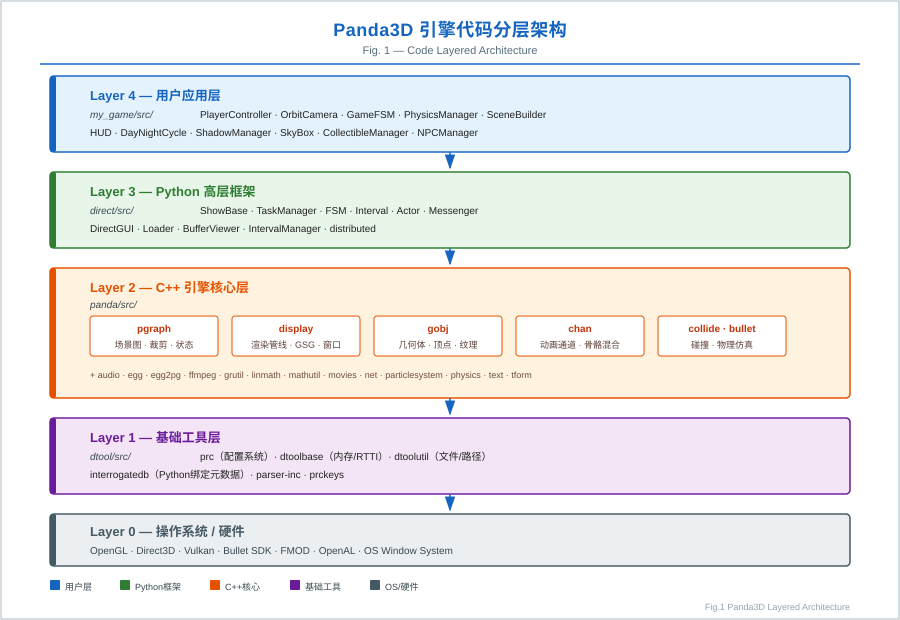
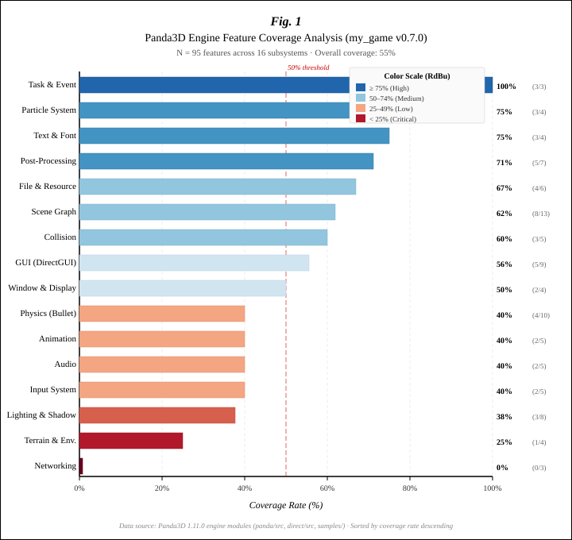

执行摘要
Panda3D 是一个以 C++ 为底层核心、以 Python 作为高层开发接口的开源 3D 游戏引擎与实时图形框架。它的工程特点不是追求“一键式编辑器生态”，而是提供稳定、可脚本化、可扩展的场景图、渲染、输入、音频、物理、动画与资源加载能力，适合教学、仿真、原型验证、独立游戏与研究型可视化项目。
本白皮书同时覆盖两个层次：第一，解析 Panda3D 引擎本身的核心技术结构；第二，以当前仓库中的 my_game 项目为案例，说明如何把引擎能力落到真实应用，包括阴影、粒子、雾效、天空盒、后处理、日夜循环、NPC、存档、小地图与状态机等系统。
引擎定位与设计哲学
Panda3D 将底层性能敏感部分放在 C++ 中实现，并通过 Python API 提供高层可编程接口。开发者通常继承 ShowBase 作为应用入口，通过 NodePath 操作场景图，通过任务系统驱动逐帧更新，通过事件系统绑定输入与交互。
适用场景
| 场景 | 适配度 | 原因 |
|---|---|---|
| 独立游戏 / 课程项目 | 高 | Python 入口低，调试快，场景图、碰撞、音频、UI 能力完整。 |
| 仿真与可视化 | 高 | 可精细控制渲染循环、相机、模型加载、物理与数据驱动更新。 |
| 大型商业 3A 项目 | 中 | 需要自建工具链、编辑器、资源管线和团队协作规范。 |
| 纯美术驱动项目 | 中 | 缺少 Unity/Unreal 式一体化编辑器体验，但脚本灵活性更高。 |
核心架构
Panda3D 的源码组织可理解为三层：dtool 提供基础设施，panda 实现引擎核心，direct 提供 Python 高层框架。其上再叠加应用项目，例如本仓库的 my_game。
源码树职责
| 源码树 | 职责 | 代表模块 |
|---|---|---|
dtool | 基础类型、配置变量、构建工具、C++/Python 绑定基础。 | Interrogate、PRC 配置、内存与类型工具。 |
panda | 引擎核心功能，包括图形对象、场景图、窗口、碰撞、音频、文本、物理集成。 | pgraph、display、gobj、collide、bullet。 |
direct | Python 高层 API，降低游戏逻辑、UI、动画与状态管理开发成本。 | showbase、task、actor、interval、fsm、gui。 |
运行时主循环
ShowBase 初始化窗口、摄像机、loader、taskMgr、messenger
-> 加载 PRC 配置与资源路径
-> 构建 render 场景图
-> 注册 accept() 输入事件
-> taskMgr.add(update) 驱动逐帧逻辑
-> GraphicsEngine 执行剔除、状态排序与绘制提交渲染管线
Panda3D 的渲染核心围绕场景图遍历、状态收集、可见性判断和图形后端提交展开。应用通过 NodePath 修改对象位置、材质、纹理、光照与渲染属性；引擎在每帧将这些状态转化为面向图形 API 的绘制命令。

关键技术点
render.setShaderAuto() 让常见光照、阴影、材质组合无需手写 GLSL。
与现代商业引擎的差异
Panda3D 没有默认绑定一种固定的 PBR 工作流，也没有强制使用编辑器组织工程。它的渲染能力更偏“可组合底座”：你可以使用自动 Shader 快速实现常规效果，也可以逐步引入自定义 GLSL、RTT、多通道渲染、地形、水面、后处理和实例化方案。
关键子系统解析
场景图
场景图是 Panda3D 的核心抽象。NodePath 既是节点句柄，也是变换、挂载、查找和状态设置的统一入口。应用通过 reparentTo() 建立层级，通过 setPos()、setHpr()、setScale() 控制空间关系。

物理与碰撞
Panda3D 同时提供原生碰撞系统与第三方物理集成。原生碰撞适合触发区域、拾取、简单事件；Bullet 适合刚体、重力、射线检测与调试可视化。案例项目采用“Bullet 负责物理，Panda3D 原生碰撞负责触发区域”的组合策略。

动画系统
动画能力分为两类：一类是 Actor 骨骼动画，服务角色模型；另一类是 Interval 动画，服务程序化插值、过渡、序列与并行动画。对游戏原型而言，Interval 是低成本构建交互反馈的关键工具。

GUI、输入与任务系统
DirectGUI 提供按钮、滑块、标签、输入框等基础控件；accept() 与 messenger 构成事件机制；taskMgr 是逐帧更新、延迟执行和系统调度的核心。三者合在一起，可以在纯 Python 中快速搭建完整交互应用。
实战案例：my_game 技术实现
my_game 是一个基于 Panda3D 1.11.0 与 Python 3.13 的 macOS 游戏开发模板。它不是单点 Demo，而是把多个引擎能力整合为可运行的小游戏骨架：玩家控制、物理、相机、拾取、NPC、UI、存档、渲染效果与调试工具都被拆成独立模块。

目录结构
my_game/
main.py # ShowBase 派生入口，组合各子系统
config.prc # Panda3D 运行时配置
src/
physics.py # BulletWorld、刚体、调试渲染
player.py # 移动、跳跃、经验值
camera.py # 第三人称、第一人称、轨道相机
shadows.py # 实时阴影与自动 Shader
particles_fx.py # 跳跃尘土、拾取星光、碰撞火花
fog.py # 线性雾、指数雾
skybox.py # 程序化天空球
post_processing.py # Bloom、AO、模糊、HDR
day_night.py # 日夜循环与光照联动
npc.py # 巡逻、追逐、返回状态
save_load.py # JSON 存档
minimap.py # DisplayRegion 小地图
game_fsm.py # Menu、Playing、Paused、GameOver系统协作方式
| 系统 | 核心职责 | 代表能力 |
|---|---|---|
| PhysicsManager | 创建 BulletWorld、设置重力、管理刚体与调试节点。 | 刚体、碰撞形状、射线检测、调试绘制。 |
| PlayerController | 处理输入状态、玩家移动、跳跃、地面检测与经验值。 | WASD、空格跳跃、Bullet rayTestClosest。 |
| OrbitCamera | 在第三人称、第一人称与轨道相机之间切换。 | 相机跟随、右键旋转、滚轮缩放。 |
| Rendering Managers | 阴影、雾效、天空盒、后处理、日夜循环。 | 实时阴影、Bloom、AO、颜色渐变。 |
| Gameplay Managers | NPC、碰撞触发、可拾取物、存档、小地图、FSM。 | 巡逻 AI、JSON 存档、DisplayRegion。 |
主循环设计
案例项目采用集中式更新循环：每帧更新玩家、物理世界、可拾取物、碰撞检测、NPC、对话框、日夜循环、相机和 HUD。这种结构对教学与中小型项目非常直观；当项目扩大后，可进一步拆分为事件驱动或 ECS 风格的数据更新管线。
能力覆盖分析
根据 my_game/ROADMAP.md 的功能表，项目对 Panda3D 核心能力完成了 42% 左右的覆盖。已经落地的能力集中在场景图、基础渲染、Bullet 物理、原生碰撞、DirectGUI、输入、粒子、后处理、任务事件和文本字体等方向。

| 能力域 | 当前状态 | 说明 |
|---|---|---|
| 场景图与基础渲染 | 已覆盖 | NodePath、模型加载、纹理、雾效、程序化几何体、自动 Shader。 |
| 光照与阴影 | 部分覆盖 | 环境光、平行光、阴影贴图已完成；点光源、聚光灯、法线贴图待扩展。 |
| 动画 | 部分覆盖 | Actor 与 Interval 已使用；动画混合、IK、运动拖尾未实现。 |
| 物理与碰撞 | 部分覆盖 | Bullet 刚体、形状、射线、调试渲染已完成；约束、软体、车辆未实现。 |
| GUI 与交互 | 已覆盖核心 | 按钮、面板、滑块、标签、HUD、对话框与快捷键体系完善。 |
| 高级渲染 | 部分覆盖 | Bloom、AO、HDR 等 CommonFilters 已使用；RTT、自定义 Shader、DOF、水面待实现。 |
| 网络与分布式 | 未覆盖 | DistributedObject、客户端/服务器、原生网络尚未进入案例范围。 |
技术路线图
下一阶段不宜盲目堆功能，而应围绕“渲染质量、内容规模、工程稳定性、可发布性”四条线推进。下面给出一个更适合从模板走向完整项目的演进顺序。
渲染深化
世界规模
玩法系统
发布工程
风险与约束
| 风险 | 影响 | 建议 |
|---|---|---|
| 资源管线不统一 | 模型、贴图、字体、音频在不同机器上表现不一致。 | 约定资源格式、目录、命名、压缩策略和加载错误处理。 |
| 渲染效果过度依赖默认滤镜 | 后续视觉风格难以差异化。 | 逐步引入自定义 Shader 和 RTT，建立最小可控后处理链。 |
| 主循环逐渐臃肿 | 系统耦合上升，调试困难。 | 为 Manager 定义生命周期接口：init、update、pause、serialize、destroy。 |
| 缺少性能预算 | 粒子、阴影、NPC 与后处理叠加后帧率不稳定。 | 建立 FPS、draw call、节点数量、粒子数量、物理步进时间的基准。 |
结论
Panda3D 是一个成熟、开放、工程感很强的 3D 引擎。它的最大价值不在于替代商业编辑器，而在于把实时 3D 应用所需的底层能力以可编程方式交给开发者。对于需要快速迭代、深入理解图形与游戏系统、或构建定制化仿真/可视化应用的团队，Panda3D 仍然是一套值得投入的技术栈。
my_game 案例已经证明：在较少依赖外部工具的情况下，Panda3D 可以支撑完整的游戏原型工程。下一步的关键不是再添加零散特性，而是把现有能力沉淀为稳定架构：统一资源管线、明确系统生命周期、补齐测试与性能基准，并在渲染与内容规模上继续深入。
Python 开发效率高，C++ 底层可靠，适合快速构建可运行的 3D 系统。
场景图、渲染管线、物理、碰撞、任务系统都暴露得足够清晰。
可从教学模板逐步扩展为真实项目，而无需一次性引入重型编辑器生态。